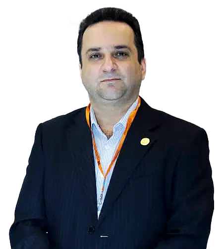

درباره پزشک
دکتر نادر اکبری دیلمقانی
- دانشیار و عضو هیئت علمی دانشگاه علوم پزشکی شهید بهشتی
- جراح و متخصص گوش و حلق و بینی
- فلوشیپ جراحی آندوسکپی بینی، سینوس و قاعده جمجمه
- جراحی زیبایی بینی
دکتر نادر اکبری دیلمقانی، دانشیار و عضو هیئت علمی دانشگاه، متخصص و جراح گوش، حلق و بینی است. ایشان در جراحی آندوسکپی بینی، سینوس و قاعده جمجمه تجربه گسترده دارد و درمانهایی ارائه میدهد که به کیفیت زندگی بیماران میافزاید. حوزه کار شامل پولیپ بینی و سینوس، سینوزیتهای چرکی و قارچی، تومورهای بینی و سینوس، آترزی کوآن، جراحی کیسه اشکی، ترمیم نشت مایع مغزینخاعی، تومورهای قاعده جمجمه و غدد بزاقی است. در بخش زیبایی نیز رینوپلاستی، جراحی زیبایی گوش، بوتاکس و فیلر انجام میشود.